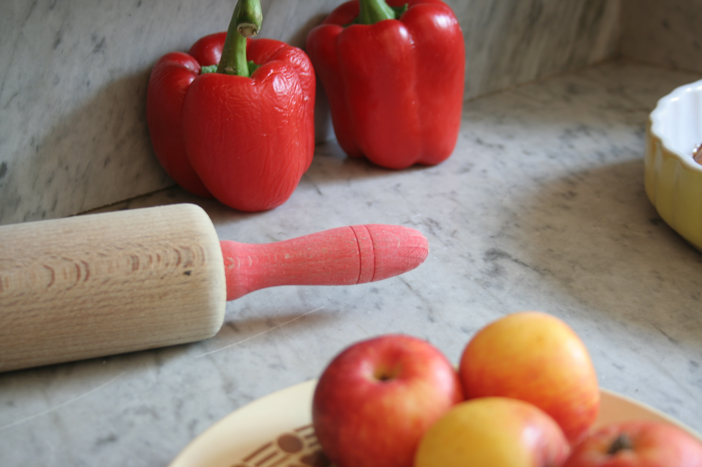
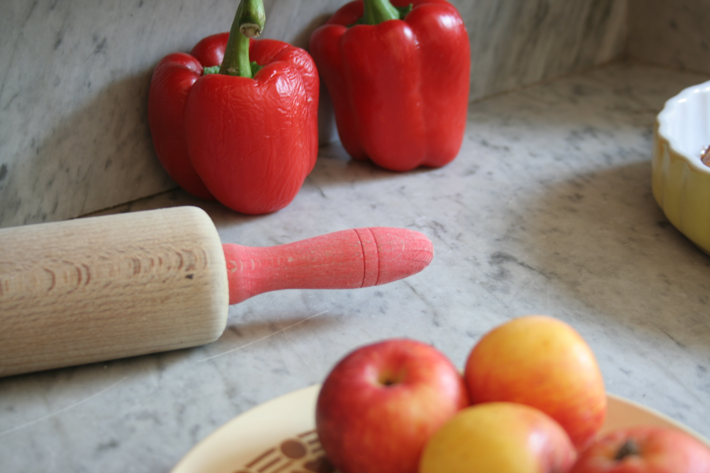
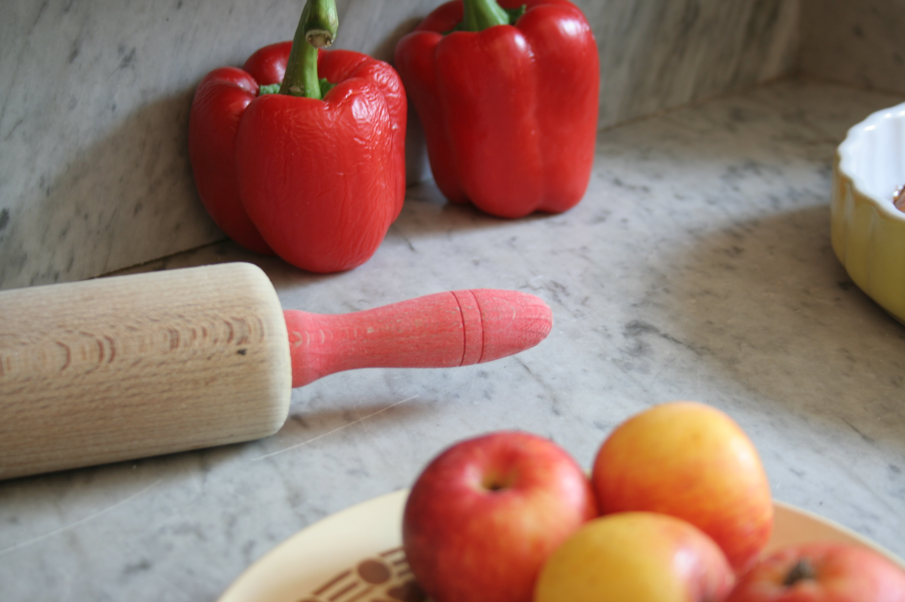
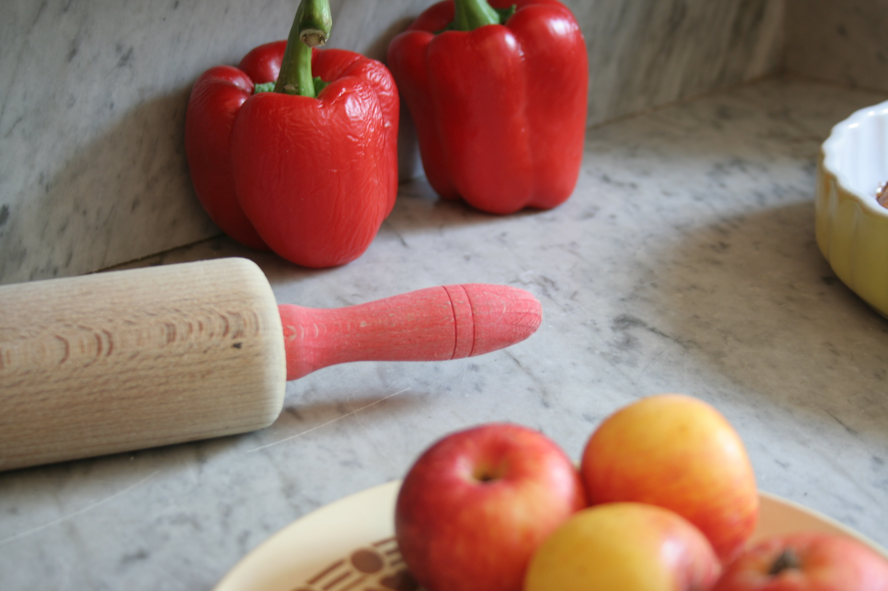

Léonnie est passionnée, curieuse et audacieuse. Elle aime la nature, ses couleurs, ses textures, ses matières et s’en inspire librement. Elle est aussi citadine, elle aime glaner, récupérer, détourner les objets qui l’entourent en leur donnant un petit supplément d’âme, un certain je ne sais quoi … Ses créations originales, douces ou acidulées trouvent leur harmonie à travers le travail du bois et la fabrication de 100 % peintures naturelles. Ses patines inspirées du dehors sont profondes, subtiles, minérales. Elles surprendront vos sens et illumineront votre intérieur. Venez découvrir son univers et entrez dans un quotidien naturel et coloré !